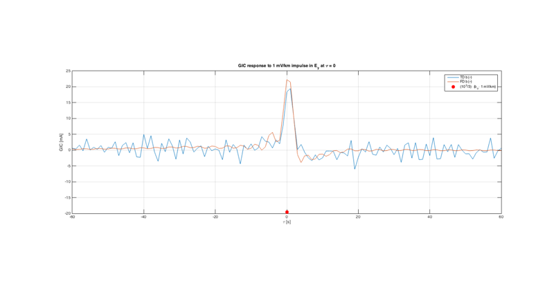
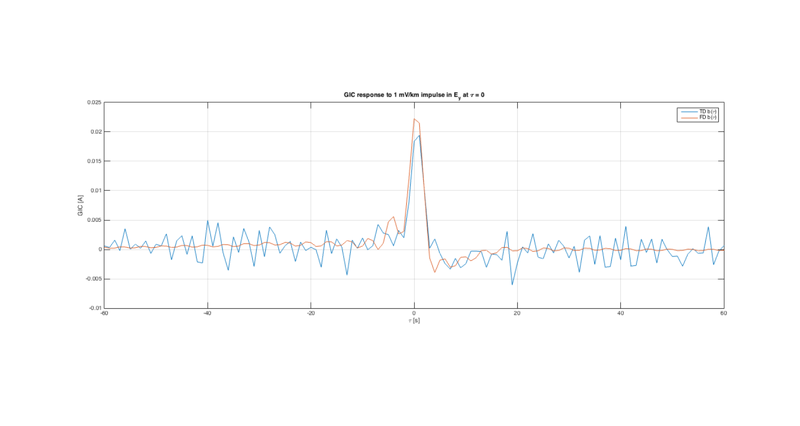
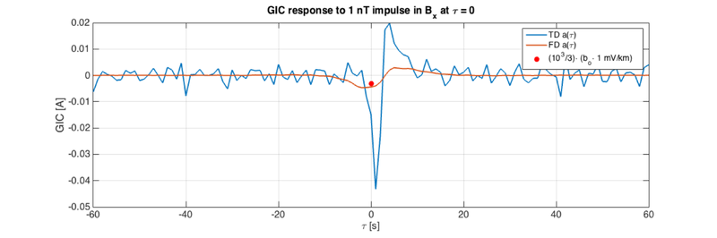
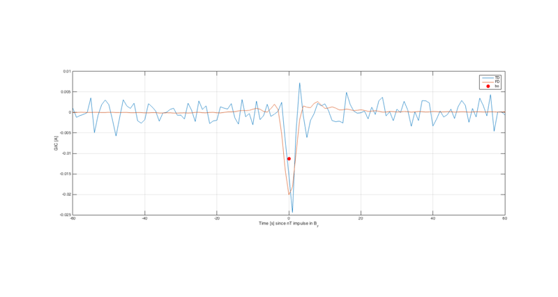

Contents
- Load output of main.mat if found; create output if not.
- 1-second magnetic field measurements
- 1-second electric field measurements
- 1-second GIC measurements
- Prediction of Ex using B as driver
- Prediction of Ey using B as driver
- Prediction of GIC using B as driver
- Prediction of GIC using E as driver
- Response of Ex to impulse in By
- Response of Ey to impulse in Bx
- Response of GIC to impulse in Ex
- Response of GIC to impulse in Ey
- Response of GIC to impulse in Ey - Zoom
- Response of GIC to impulse in Bx
- Response of GIC to impulse in By
Load output of main.mat if found; create output if not.
if ~exist('Z_TD','var') % Z_TD will exist if main.m run previously. if exist('main.mat','file') %load('main.mat'); % Load output of main.m else %main % Run main.m end end addpath('../../stats'); % For PE calculation (PE_NONFLAG). if exist('nodock','var') set(0,'DefaultFigureWindowStyle','normal'); else %set(0,'DefaultFigureWindowStyle','docked'); % Dock figure windows. end png = 1; % Save images fn = 0; fn=fn+1; figure(fn);clf;hold on;box on;grid on; plot(lags,xc,'LineWidth',2); hold on;grid on; plot(lags,yc,'LineWidth',2); plot(lags,gc,'LineWidth',2); legend('xcorr(GIC,E_x)','xcorr(GIC,E_y)','acorr(GIC)'); xlabel('Lag [s]');

1-second magnetic field measurements
From http://www.kakioka-jma.go.jp/obsdata/metadata/en on 07/01/2017
fn=fn+1; figure(fn);clf;hold on;box on;grid on; plot(tB,B); xlabel('Days since 2006-12-13'); ylabel('[nT]') legend('B_x','B_y','B_z','Location','NorthWest'); title('Memambetsu Magnetic Observatory (MMB)'); figconfig; if png,print('-dpng','./figures/main_plot_B.png');end
Warning: Cannot set Position while WindowStyle is 'docked'

1-second electric field measurements
From http://www.kakioka-jma.go.jp/obsdata/metadata/en on 07/01/2017
fn=fn+1; figure(fn);clf;hold on;box on;grid on; plot(tE,E); xlabel('Days since 2006-12-13'); ylabel('[mV/km]') legend('E_x','E_y','Location','NorthWest'); title('Memambetsu Magnetic Observatory (MMB)'); figconfig if png,print('-dpng','./figures/main_plot_E.png');end
Warning: Cannot set Position while WindowStyle is 'docked'

1-second GIC measurements
From S. Watari via email. Data file has two columns, one is 1-second data and the other is 1-second data low-pass-filtered at @ 1 Hz (no additional details are given for filter). Results are not dependent on which column was used.
This is the original data after converting from JST to UT. Note that there appears to be a ~66-second shift in this data that clearly appears when the IRF is computed. The computed GIC response to an impulse in E or B at time zero has a peak at -66 seconds. This shift was made before all transfer function calculations.
fn=fn+1; figure(fn);clf;hold on;box on;grid on; plot(tGIC,GIC(:,1)); plot(tGIC,GIC(:,2)); set(gca,'XLim',[0 3]) xlabel('Days since 2006-12-13'); ylabel('[A]'); legend('GIC @ 1 Hz','GIC @ 1 Hz; LPF @ 1 Hz','Location','SouthWest'); title('Memambetsu 187 kV substation'); figconfig if png,print('-dpng','./figures/main_plot_GIC.png');end fn=fn+1; figure(fn); hist(1000*aoboot) xlabel('a_o [A km/V]'); ylabel('# in bin'); title(sprintf('a_o = %0.2f +/- %.2f [A km/V]',1000*ao,1000*aobootstd)); if png,print('-dpng','./figures/main_plot_ao_hist.png');end fn=fn+1; figure(fn); hist(1000*boboot) xlabel('b_o [A km/V]'); ylabel('# in bin'); title(sprintf('b_o = %0.2f +/- %.2f [A km/V]',1000*bo,1000*bobootstd)); if png,print('-dpng','./figures/main_plot_bo_hist.png');end fn=fn+1; figure(fn);clf;hold on;box on;grid on; plot(tl,aolag,'LineWidth',2); plot(tl,bolag,'LineWidth',2); plot(tl,(1-arvlag)/10,'LineWidth',2); xlabel('Lag'); ylabel('[A km/mV]'); legend('a_o','b_o','pe/10'); if png,print('-dpng','./figures/main_plot_ao_bo_pe_vs_lag.png');end
Warning: Cannot set Position while WindowStyle is 'docked'


Prediction of Ex using B as driver
Using Time Domain (TD) and Frequency Domain (FD) method.
Time domain method uses 60*5 causal and 60*5 acausal lag values.
fn=fn+1; figure(fn);clf;hold on;box on;grid on; plot(tE,E(:,1)); plot(tE,Ep_TD(:,1)); plot(tE,Ep_FD(:,1)); xlabel('Days since 2006-12-13'); ylabel('E_x [mV/km]'); legend('Measured','TD','FD','Location','NorthWest'); title('B driver'); figconfig if png,print('-dpng','./figures/main_plot_Expredicted_w_B.png');end
Warning: Cannot set Position while WindowStyle is 'docked'

Prediction of Ey using B as driver
Time domain method uses 60*5 causal and 60*5 acausal lag values.
fn=fn+1; figure(fn);clf;hold on;box on;grid on; plot(tE,E(:,2)); plot(tE,Ep_TD(:,2)); plot(tE,Ep_FD(:,2)); xlabel('Days since 2006-12-13'); ylabel('E_y [mV/km]'); title('B driver'); legend('Measured','TD','FD','Location','SouthWest'); figconfig if png,print('-dpng','./figures/main_plot_Eypredicted_w_B.png');end
Warning: Cannot set Position while WindowStyle is 'docked'

Prediction of GIC using B as driver
Time domain method uses 60*5 causal and 60*5 acausal lag values. Prediction is for GIC LPF @ 1 Hz. Very similar results for raw data. The Const lines correspond to the models

and

where the constants are determined using ordinary least squares regression. It is curious that addition of the Bz compontent to the model improves the predictions significantly. It is also unexpected that predictions of GIC given B are so much better than predictions of GIC given E (next figure) because E is more directly related to GIC. That is, in terms of transfer fucntions, and  = angular frequency,
= angular frequency,

and

so

Node that the PE for the FD method is poor. It could be improved if dB/dt was used as an input instead of B. The FD method is better for the next plot because E has less power at long periods (as would dB/dt).
fn=fn+1; figure(fn);clf;hold on;box on;grid on; plot(tGIC,GIC(:,2)); plot(tGIC,GICp3_TD(:,2)); plot(tGIC,GICp3_FD(:,2)); plot(tGIC,GICp3_TD0(:,2)); plot(tGIC,GICp3_TD03(:,2)); xlabel('Days since 2006-12-13'); ylabel('GIC [A]'); legend('Measured',... sprintf('TD; PE = %.2f',pe_nonflag(GIC(:,2),GICp3_TD(:,2))),... sprintf('FD; PE = %.2f',pe_nonflag(GIC(:,2),GICp3_FD(:,2))),... sprintf('Const x,y input; PE = %.2f',pe_nonflag(GIC(:,2),GICp3_TD0(:,2))),... sprintf('Const x,y,z input; PE = %.2f',pe_nonflag(GIC(:,2),GICp3_TD03(:,2))),... 'Location','SouthWest'); title('B driver'); legend boxoff figconfig if png,print('-dpng','./figures/main_plot_GICpredicted_w_B');end
Warning: Cannot set Position while WindowStyle is 'docked'

Prediction of GIC using E as driver
Time domain method uses 60*5 causal and 60*5 acausal lag values. Prediction is for GIC LPF @ 1 Hz. Very similar results for raw data. The "Const" line correspond to the model GIC(t) = a*Ex(t) + b*Ey(t) where a and b were determined by ordinary least squares regression. Note that the computed values of a and b were a = 0.45 and b = -0.63. The negative sign on b is unexpected given that when the model GIC(w) = A(w)*Ex(w) + B(w)*Ey(w) is used, the impulse response associated with A(w) and B(w) are generally positive. The impulse responses are shown later.
fn=fn+1; figure(fn);clf;hold on;box on;grid on; plot(tGIC,GIC(:,2)); plot(tGIC,GICp2_TD(:,2)); plot(tGIC,GICp2_FD(:,2)); plot(tGIC,GICp2_TD0(:,2)); xlabel('Days since 2006-12-13'); ylabel('GIC [A]'); legend('Measured',... sprintf('TD; PE = %.2f',pe_nonflag(GIC(:,2),GICp2_TD(:,2))),... sprintf('FD; PE = %.2f',pe_nonflag(GIC(:,2),GICp2_FD(:,2))),... sprintf('Const; PE = %.2f',pe_nonflag(GIC(:,2),GICp2_TD0(:,2))),... 'Location','SouthWest'); title('E driver'); figconfig if png,print('-dpng','./figures/main_plot_GICpredicted_w_E');end
Warning: Cannot set Position while WindowStyle is 'docked'

Response of Ex to impulse in By
fn=fn+1; figure(fn);clf;hold on;box on;grid on; plot(t_TD,H_TD(:,2)); plot(t_FD,H_FD(:,2)); xlabel('\tau [s]'); ylabel('E_x [mV/km]'); title('E_x response to 1 nT impulse in B_y at \tau = 0'); legend('TD H_{xy}(\tau)','FD H_{xy}(\tau)'); set(gca,'XLim',[-60,60]); figconfig if png,print('-dpng','./figures/main_plot_Ex_IRF_to_By.png');end
Warning: Cannot set Position while WindowStyle is 'docked'

Response of Ey to impulse in Bx
fn=fn+1; figure(fn);clf;hold on;box on;grid on; plot(t_TD,H_TD(:,3)); plot(t_FD,H_FD(:,3)); xlabel('\tau [s]'); ylabel('E_y [mV/km]'); title('E_y response to 1 nT impulse in B_x at \tau = 0'); legend('TD H_{yx}(\tau)','FD H_{yx}(\tau)'); set(gca,'XLim',[-60,60]); figconfig if png,print('-dpng','./figures/main_plot_Ey_IRF_to_Bx.png');end
Warning: Cannot set Position while WindowStyle is 'docked'

Response of GIC to impulse in Ex
The red dot for a is the value computed using ordinary linear least squares regression on GIC(t) = aEx(t) + bEy(t). The value plotted is a/4 so the features of the IRFs are easier to see. The sign of a is positive and consistent with the IRF, and the magnitude of a relative to the peak of the IRF can be expained by the fact that a represents an integral of the IRF.
fn=fn+1; figure(fn);clf;hold on;box on;grid on; plot(t2_TD,1000*H2_TD(:,3)); plot(t2_FD,1000*H2_FD(:,3)); plot(0,1000*ao/5,'r.','MarkerSize',30); xlabel('\tau [s]'); ylabel('GIC [mA]'); title('GIC response to 1 mV/km impulse in E_x at \tau = 0'); legend('TD a(\tau)','FD a(\tau)','(10^3/5)\cdot (a_o\cdot 1 mV/km)'); set(gca,'XLim',[-60,60]); figconfig if png,print('-dpng','./figures/main_plot_GIC_IRF_to_Ex.png');end
Warning: Cannot set Position while WindowStyle is 'docked'

Response of GIC to impulse in Ey
The red dot for b is the value computed using ordinary linear least squares regression on GIC(t) = aEx(t) + bEy(t). b/2 is shown so the features of the IRFs are easier to see. Note that this IRF has the feature that it overshoots the zero line. This feature cannot be produced by (first-order) LR or RC circuit model alone. This is a second-order effect. Also note that the sign of b is not consistent with the sign of the peak of the IRF.
fn=fn+1; figure(fn);clf;hold on;box on;grid on; plot(t2_TD,1000*H2_TD(:,2)); plot(t2_FD,1000*H2_FD(:,2)); plot(0,1000*bo/3,'r.','MarkerSize',30); xlabel('\tau [s]'); ylabel('GIC [mA]'); title('GIC response to 1 mV/km impulse in E_y at \tau = 0'); legend('TD b(\tau)','FD b(\tau)','(10^3/3)\cdot (b_o\cdot 1 mV/km)'); set(gca,'XLim',[-60,60]); figconfig if png,print('-dpng','./figures/main_plot_GIC_IRF_to_Ey.png');end
Warning: Cannot set Position while WindowStyle is 'docked'
Response of GIC to impulse in Ey - Zoom
Same as previous plot with with b not shown to reveal undershoot detail in IRF.
fn=fn+1; figure(fn);clf;hold on;box on;grid on; plot(t2_TD,H2_TD(:,2)); plot(t2_FD,H2_FD(:,2)); xlabel('\tau [s]'); ylabel('GIC [A]'); title('GIC response to 1 mV/km impulse in E_y at \tau = 0'); legend('TD b(\tau)','FD b(\tau)'); set(gca,'XLim',[-60,60]); figconfig if png,print('-dpng','./figures/main_plot_GIC_IRF_to_Ey_2.png');end
Warning: Cannot set Position while WindowStyle is 'docked'
Response of GIC to impulse in Bx
The red dot for a is the value computed using ordinary linear least squares regression on GIC(t) = aBx(t) + bBy(t).
fn=fn+1; figure(fn);clf;hold on;box on;grid on; plot(t3_TD,H3_TD(:,3)); plot(t3_FD,H3_FD(:,3)); plot(0,aoB,'r.','MarkerSize',30); xlabel('Time [s] since 1 nT impulse in B_x'); ylabel('GIC [A]'); legend('TD','FD','ao'); set(gca,'XLim',[-60,60]); figconfig if png,print('-dpng','./figures/main_plot_GIC_IRF_to_Bx.png');end
Warning: Cannot set Position while WindowStyle is 'docked'
Response of GIC to impulse in By
The red dot for b is the value computed using ordinary linear least squares regression on GIC(t) = aBx(t) + bBy(t).
fn=fn+1; figure(fn);clf;hold on;box on;grid on; plot(t3_TD,H3_TD(:,2)); plot(t3_FD,H3_FD(:,2)); plot(0,boB,'r.','MarkerSize',30); xlabel('Time [s] since nT impulse in B_y'); ylabel('GIC [A]'); legend('TD','FD','bo'); set(gca,'XLim',[-60,60]); figconfig if png,print('-dpng','./figures/main_plot_GIC_IRF_to_By.png');end
Warning: Cannot set Position while WindowStyle is 'docked'